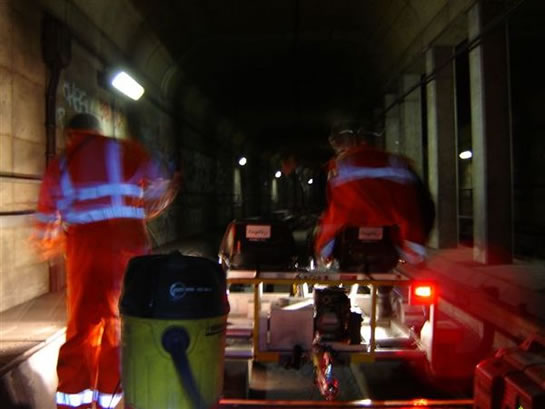
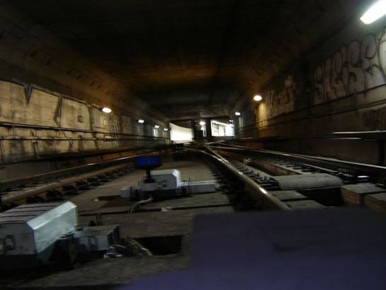
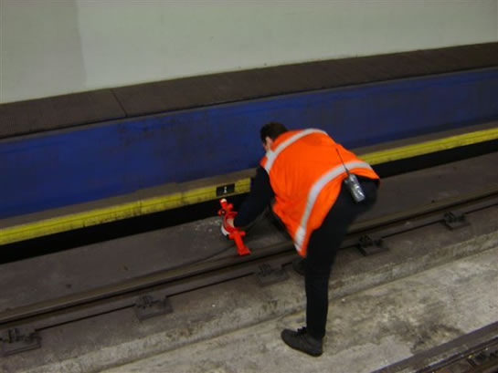
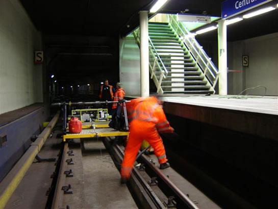
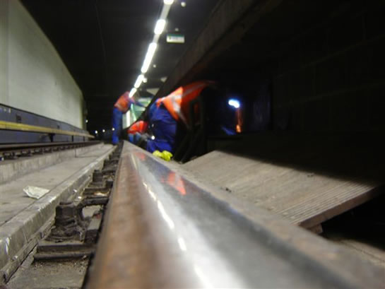
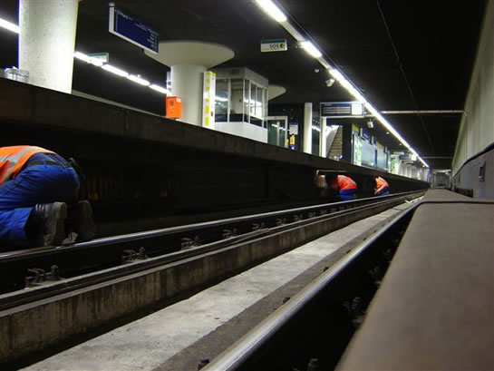
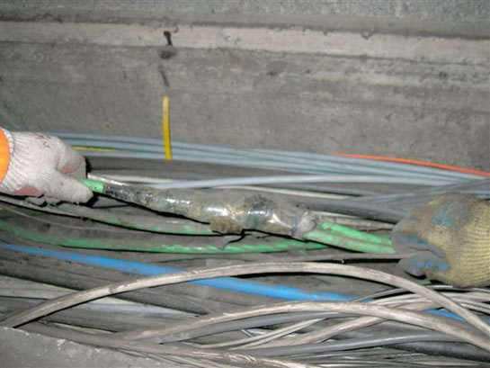
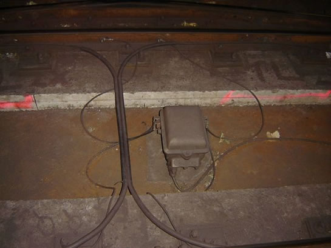

Werkzaamheden in metrotunnel en meer nieuws...
- dinsdag 09 december 2008 10:33
- Geschreven door Joachim
Niet alleen boven de grond wordt gewerkt aan de bouw van Randstadrail. Ook ónder de grond is dit het geval. In het kader van Randstadrail wordt, zoals bekend, relaisruimte Centraal Station verhuisd naar een nieuwe ruimte in station Stadhuis. Hiervoor moet niet alleen de fysieke installatie verplaatst worden, maar moeten ook kabels verlegd worden.
Dit gebeurt in de vroege uurtjes, wanneer er geen metro's rijden. Het werk wordt uitgevoerd door Cegelec (o.a. bekend van het AHOB-project en de verbouwing van wisselcomplex Aveling). De gereedschappen van Cegelec worden gestald in de tunnel áchter het Centraal Station, alwaar de uitloopsporen liggen. Onderstaande foto's geven een impressie van de voorbereidende werkzaamheden van de verplaatsing van relaisruimte Centraal. De daadwerkelijke verhuizing vindt plaats in april, tijdens het paasweekeinde.
Foto's met dank aan Jeepie.nl.

Cegelec heeft voor het werk in de tunnels een railvoertuig, de zgn. "MultiKart". Hiermee kunnen lange afstanden overbrugd worden, en hoef je minder lang te lopen. Het werkproces versnelt: als je even naar Stadhuis moet ben je sneller met de Multikart dan met de benenwagen.

Wisselcomplex Centraal Station, met wissels 1, 2, 3 en 4. Dít is het oudste stukje metrolijn van Rotterdam.

Middels een kortsluitpoot wordt ervoor gezorgd dat de veiligheid gewaarborgd is, en er geen spanning op de baan staat.

Het karwei kan beginnen, er worden kabels verlegd en vervangen onder het perron.

De tunnels zijn niet schoon, met name buiten de stations worden veel spuiten gevonden van verslaafden.


Oude kabels worden vervangen door nieuwe of worden verlegd. De groene kabels zijn verbonden aan de spoortrafo's (ATB-signaleringspotten).

Een spoortrafo in het spoor nabij Centraal Station... Uiteindelijk moeten alle signalen die binnenkomen in relaisruimte Centraal, binnenkomen op het Stadhuis, dat gaat gebeuren in april.
Brandje Vijfsluizen
Zaterdagmorgen rond 07.00 uur traden er rookverschijnselen op bij een metrotrein op station Vijfsluizen spoor 1. Politie en brandweer waren aanwezig voor assistentie. De metrodienst op de Beneluxlijn werd ongeveer 30 minuten stilgelegd. Welke metrotrein het betrof, is tot op heden onbekend.
6102 & 6101
Naast locomotief 6102, welke momenteel verblijft op Centrale Werkplaats Kleiweg voor een revisie, is ook locomotief 6101 aangekomen op de Kleiweg. Vermoedelijk wordt ook deze locomotief gereviseerd. Wat het lot is van de 6102 is nog steeds onduidelijk, de groene kleur zou kunnen duiden op verkoop aan een ander bedrijf. Voorts verblijft er ook nog een platte wagen op de CW, het nummer hiervan is onbekend.
5024
Rijtuig 5024 is onlangs weer verplaatst op het remiseterrein van de Kleiweg. Dit maal niet alleen met een tram uit de 1600-serie, maar ook met een vierasser. De vierasser hielp een handje met duwen, terwijl tram 1612 functioneerde als trekkracht. Waar het metrostel nu precies staat is onbekend. Ook niet bekend is of het oude metrorijtuig bij de verplaatsing schade heeft opgelopen. We hopen binnenkort meer informatie te verschaffen over een mogelijk onderkomen voor het nostalgische rijtuig!